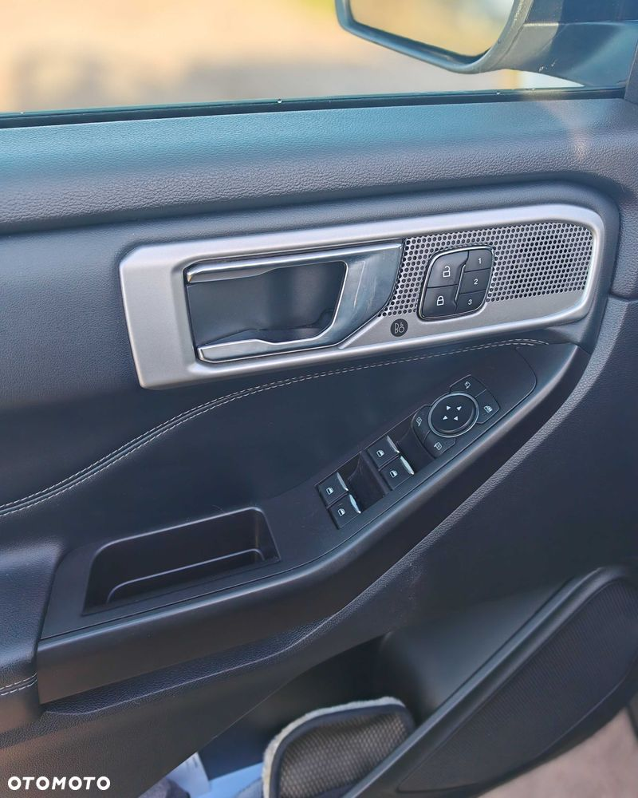
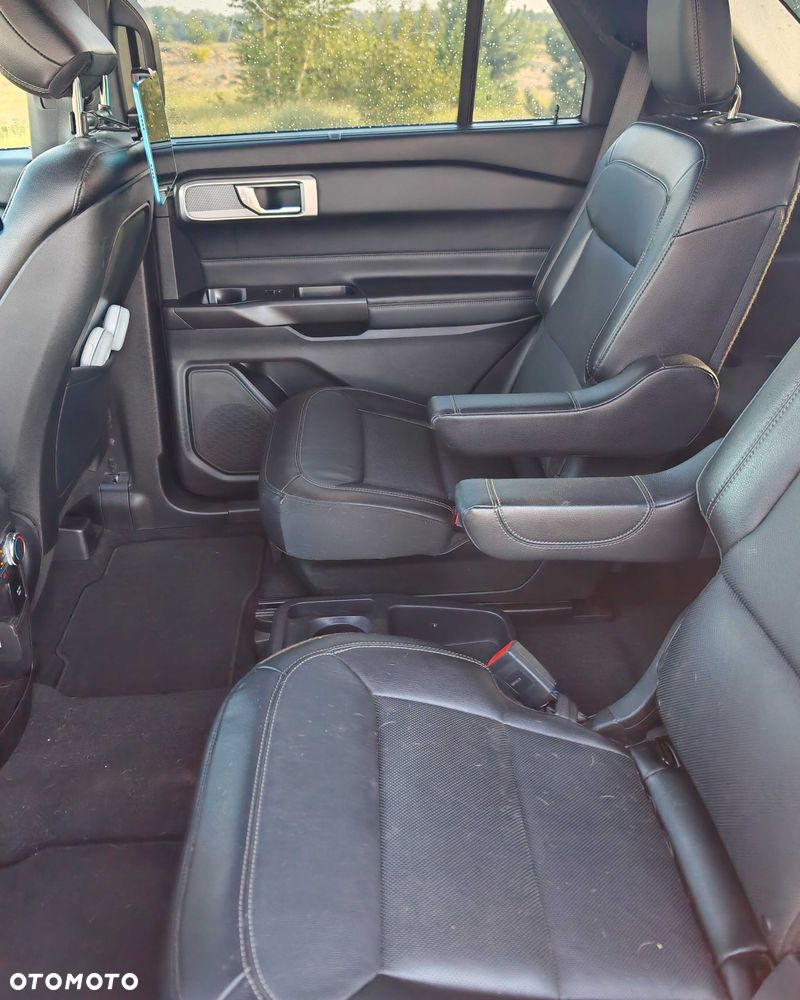
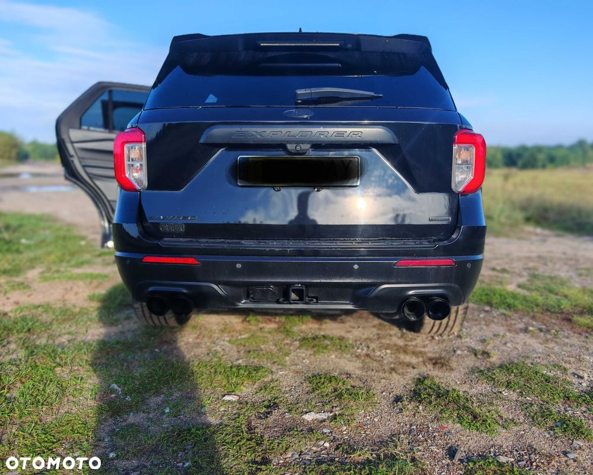

Sprzedam Forda Explorera z 2020 roku w wersji 2,3 benzyna 300 km, napęd na tył automatyczna skrzynia biegów. Auto ma przebieg 102 000 km. Pod maską moc 300 koni, dynamiczny i oszczędny SUV Samochód w bardzo bogatej wersji wyposażenia – skórzana tapicerka, wentylowane i podgrzewane fotele z elektryczną regulacją i pamięcią, trzystrefowa klimatyzacja, panoramiczny dach szklany, system nagłośnienia, nawigacja, adaptacyjny tempomat, asystent pasa ruchu, system rozpoznawania znaków, kamera 360°, czujniki parkowania, system bezkluczykowy, ładowarka indukcyjna, Android Auto, system BLIS, podgrzewana kierownica, światła LED, felgi 20”, elektrycznie składane lusterka, asystent martwego pola, systemy bezpieczeństwa (ABS, ESP, poduszki powietrzne, asystent hamowania awaryjnego, wykrywanie pieszych, kontrola zjazdu, czujnik zmęczenia kierowcy i wiele innych). Auto gotowe do jazdy, zapraszam na oględziny i jazdę próbną. Marcin


